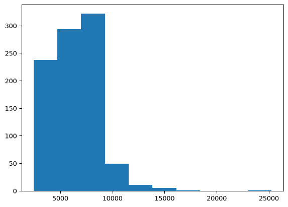
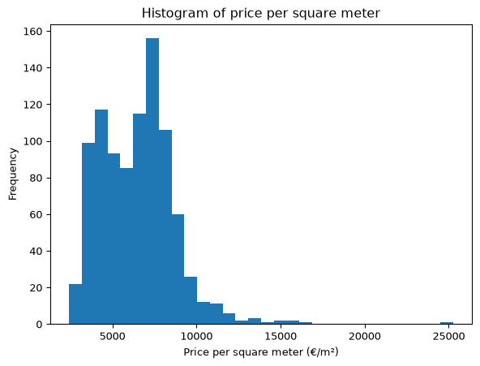
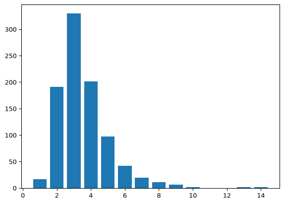
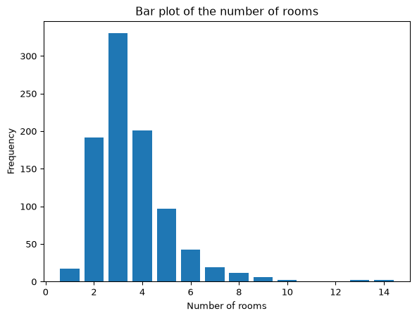
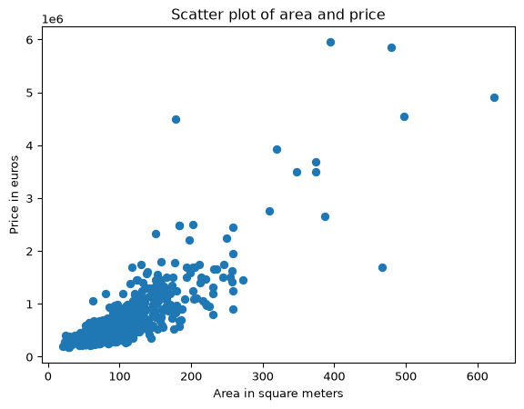
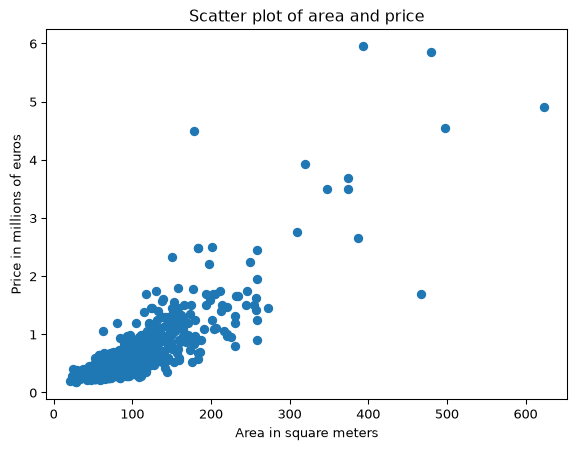
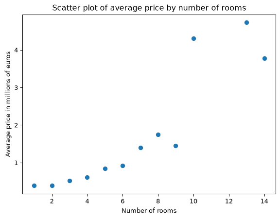
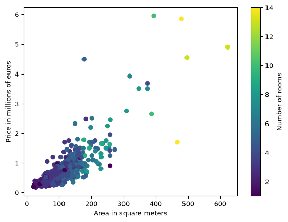

import pandas as pd
df = pd.read_csv("HousingPrices-Amsterdam-August-2021.csv")
# Drop variable unnamed:
df.drop('Unnamed: 0', axis=1, inplace=True)
# Drop missing values for price:
df = df[~df['Price'].isna()]
# Create price per square meter variable:
df['price_per_sqm'] = df['Price'] / df['Area']
# Rename Zip to postcode and Room to num_rooms:
df.rename(columns={"Zip" : "postcode", "Room" : "num_rooms"}, inplace=True)
# Change all variable names to lower case:
df.columns = df.columns.str.lower()9 Introduction to Data Visualization
In the previous chapter we learned how to read in, clean and explore a dataset. In this chapter we will learn how we can visualize the data with plots. We will continue with the dataset from the previous chapter. First let’s read in the data again and re-do the cleaning steps we did before:
9.1 The Module pyplot from matplotlib
The Python module we will use to make plots is called pyplot which is contained in the library matplotlib. Similar to how we loaded numpy as np and pandas as pd, we will load pyplot from matplotlib as plt. Again we use plt because this is the convention used around the world.
Let’s load it up:
import matplotlib.pyplot as plt9.2 Histograms
To describe the distribution of a single numeric variable, we can use a histogram. A histogram splits the data into “bins” and shows the number of observations in each bin.
We can create a histogram by using the .hist() from matplotlib.pyplot, which we can call with plt.hist() because we aliased matplotlib.pyplot with plt. We can just put the values we want to plot into this function:
plt.hist(df["price_per_sqm"])(array([238., 293., 322., 49., 11., 5., 1., 0., 0., 1.]),
array([ 2430.55555556, 4712.78089888, 6995.0062422 , 9277.23158552,
11559.45692884, 13841.68227216, 16123.90761548, 18406.1329588 ,
20688.35830212, 22970.58364544, 25252.80898876]),
<BarContainer object of 10 artists>)
We can customize the plot in different ways. First, we might want to change the number of bins. We can plot it with 30 bins using the bins argument in the hist() function. We can also change the axis labels and plot title.
plt.hist(df["price_per_sqm"], bins=30)
plt.xlabel("Price per square meter (€/m²)")
plt.ylabel("Frequency")
plt.title("Histogram of price per square meter")Text(0.5, 1.0, 'Histogram of price per square meter')
9.3 Bar Plot
A bar plot plots the number of occurrences of variable, whether it is numerical or categorical (string). Recall in the last chapter we learned how to get the number of occurrences of different values with value_counts():
df["num_rooms"].value_counts()num_rooms
3 330
4 201
2 191
5 97
6 42
7 19
1 17
8 11
9 6
13 2
10 2
14 2
Name: count, dtype: int64Let’s visualize this. We use the bar() function and provide the values and the counts as separate arguments. We can extract these using .index and .values respectively:
num_room_counts = df["num_rooms"].value_counts()
plt.bar(num_room_counts.index, num_room_counts.values)<BarContainer object of 12 artists>
And we can add some customization similar to above:
plt.bar(num_room_counts.index, num_room_counts.values)
plt.xlabel("Number of rooms")
plt.ylabel("Frequency")
plt.title("Bar plot of the number of rooms")Text(0.5, 1.0, 'Bar plot of the number of rooms')
9.4 Scatter Plot
The previous two types of plots are used to describe a single variable. When we want to describe the relationship between a pair of variables we use a scatter plot. This shows all the values of the two variables on a Cartesian plane. Let’s take a look at the relationship between house area and price:
plt.scatter(df["area"], df["price"])
plt.xlabel("Area in square meters")
plt.ylabel("Price in euros")
plt.title("Scatter plot of area and price")Text(0.5, 1.0, 'Scatter plot of area and price')
We can see that larger houses on average sell for more. Notice that the axis for price is in the range 0 to 6, but there is a 1e6 on the axis indicating the scale (millions). If we divide price by one million we can show the plot in a more conventional form:
plt.scatter(df["area"], df["price"] / 1000000)
plt.xlabel("Area in square meters")
plt.ylabel("Price in millions of euros")
plt.title("Scatter plot of area and price")Text(0.5, 1.0, 'Scatter plot of area and price')
When there are lots of data, it can also be useful to plot averages of y by values of x. Let’s take a look at the average price by the number of rooms.
plot_df = df.groupby("num_rooms", as_index=False)["price"].mean()
plt.scatter(plot_df["num_rooms"], plot_df["price"] / 1000000)
plt.xlabel("Number of rooms")
plt.ylabel("Average price in millions of euros")
plt.title("Scatter plot of average price by number of rooms")Text(0.5, 1.0, 'Scatter plot of average price by number of rooms')
Note that I use as_index=False here so that num_rooms becomes a variable in plot_df instead of just being the row index. Here we see that from 1 to 8 rooms the price is steadily increasing. However, after that things jump around a lot. This is because there are fewer observations with more than 8 rooms, and so the average price of these houses will be more volatile.
Finally, if you want to visualize 3 variables at once, you can use the color of the dots to represent a third variable. For example, let’s make the color of the dots the number of rooms:
plt.scatter(df["area"], df["price"] / 1000000, c=df["num_rooms"])
plt.xlabel("Area in square meters")
plt.ylabel("Price in millions of euros")
plt.colorbar(label="Number of rooms")<matplotlib.colorbar.Colorbar at 0x7926e4b682f0>
Here we see that the houses with more rooms are the larger, more expensive houses.